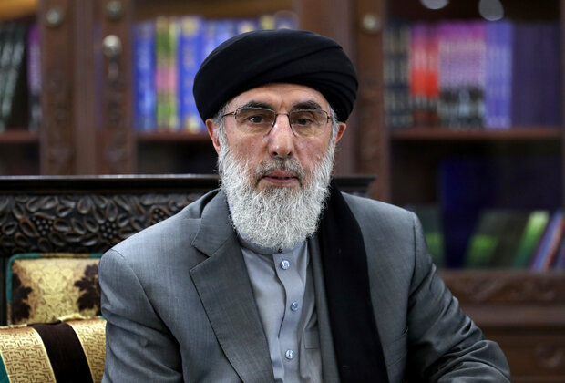

Афган, без вести пропавшие
Пропавший без вести лётчик 263-й отдельной
разведывательной авиаэскадрильи. Поиск продолжается.
У лагеря Шамшату две системы охраны. Первый внешний обслуживает пакистанская полиция, а второй - охранники лагеря, развернутые «Хезб-е-Ислами».
По словам члена военной комиссии «Хезба» Ахтара Мухаммада Шарафата, сторонникам партии из разных провинций было роздано 4000 участков. Большинство важных партийных командиров жили в лагере, по крайней мере, временно, когда укрывались от операций в Афганистане и приезжали за припасами. Офис Хекматияра был размещен в зоне B лагеря, и хотя у него также был дом в городе Пешавар, он предпочитал находиться в Шамшату и оставался там большую часть времени.

Гульбеддин Хекматияр
Помимо афганцев, во время сопротивления советскому вторжению в
лагере проживали некоторые иностранные боевики, в том числе арабы и
выходцы из Средней Азии. Во время антисоветского «джихада» в Шамшату
также была своя тюрьма, где якобы применялись пытки; об этом
подробно говорится в отчете за 2005 год, подготовленном Проектом
правосудия по Афганистану (AJP).
На фото, пропавший без вести в
1987 г. в Афганистане ст. лейтенант Пантелюк Сергей Иванович,
пропавший без вести в 1987 г. в Афганистане. Он служил в 263-й
отдельной разведывательной авиаэскадрильи ВВС СССР.
Исключительные обстоятельства наших поисков подтолкнули публикацию этого материала в открытом доступе. Требуется контактная поддержка социальных сетей интернет сообщества, чтобы выйти на людей, поддерживающих связь с Сергеем Ивановичем в Афганистане (Пакистане). Посредник, передавший записку из лагеря Шамшату от Сергея Пантелюка и сделавший его современную фотографию не выходит на связь. По предварительным данным он погиб.
В записке Сергей Иванович просил о помощи в возвращении на Родину.
Современная фотография ст. лейтенанта Пантелюка была сделана
посредником четыре года назад в Пакистане близ города Пешавар в
лагере для перемещённых лиц "Шамшату". К сожалению, пока мы собирали
силы и средства – произошло ЧП с посредником.
Наша экспедиция в
Пакистан по налаживанию контактов оказалась мало результативной
ввиду крайне сложной обстановки в указанном районе.
Зная его судьбу, мы с уверенностью можем сказать, что этот человек
достойный. В 1988 году, к сожалению, его не удалось вызволить из
плена. Начался вывод советских войск из провинций, граничащих с
Пакистаном.
Для справки о лагере "Шамшату" Хотя лагерь
официально известен как Насрат Мена - что переводится как Квартал
Победы, что является намеком на надежду, что афганцы преодолеют
советскую оккупацию, - лагерь более известен как Шамшату. Это
название бесплодной, похожей на пустыню области, населенной
черепахами, в которой он был основан в 1983 году (Шамшату означает
«черепаха» на пушту.) Он был основан для приема афганских беженцев.
То, что должно было быть временным лагерем беженцев, где люди жили в
палатках, превратилось в полноценный город из глиняных построек,
обширно разросшийся на юго-востоке пакистанской провинции Пешавара,
столицы провинции Хайбер-Пахтунхва. Здесь были базар, школы, мечети,
ресторанчики, две больницы (одна для мужчин и одна для женщин) и два
университета, один военный, а другой с медицинским, инженерным и
педагогическим факультетами. Как и многие другие лагеря афганских
беженцев, которые были созданы в 1980-х годах, контроль над лагерем
Шамшату был передан группировке афганских моджахедов, которая тогда
боролась с советской оккупацией, в данном случае Хезб-и Ислами во
главе с Гульбеддином Хекматияром. Исламабад стал источником больших
сумм денег, оружия и других материалов из западных, арабских стран и
Китая для моджахедов. Если беженцы нуждались в гуманитарной помощи,
они должны были присоединиться к одной из этих фракций, а в
некоторых лагерях, включая Шамшату, они должны были «присоединиться»
к фракции, контролирующей лагерь. «Хизб-е-Ислами» была самой любимой
группировкой Пакистана (до прихода Талибана в середине 1990-х), и
она получала большую часть иностранного оружия и финансирования.
Фракции моджахедов, базирующиеся в Пакистане, содержали тюрьмы, где содержали, пытали и в некоторых случаях казнили афганских беженцев, подозреваемых в противодействии политике Хизб-е Ислами (Хекматияр) и Хизб-Ислами (Халис). Хьюман Райтс Вотч описала некоторые из этих тюрем. Одним из самых известных был Шамшату, который использовался Хекматиаром. По данным Хьюман Райтс Вотч, «пытки были обычным делом, включая жестокие избиения". Хьюман Райтс Вотч также сообщила, что пакистанская межведомственная разведка (ISI) также допрашивала и иногда пытала афганских беженцев, которые считались «угрозой безопасности», в некоторых случаях потому, что они не поддерживали одну из базирующихся в Пешаваре партий моджахедов. Она описала тюрьму: «тюрьма представляет собой двухэтажное здание, часть которого под землей. Сообщается, что в тюрьме есть отделение для женщин-заключенных». Кроме того, Хизб-и Ислами обвиняли в убийствах членов других группировок моджахедов, монархистов, женщин-активистов и интеллектуалов.
Шамшату. Базар.
В 2016 году произошли два события, которые «побудили» жителей
Шамшату уехать. Во-первых, как и все другие афганские беженцы,
давление пакистанских властей на афганцев с целью их покинуть
усиливалось. Перемещения включали закрытие границы Торхама в июне
2016 года, и ряд новых правил, включая необходимость для афганцев
иметь при себе паспорт и действующую визу для въезда в Пакистан.
Афганцы, проживающие в Шамшату, заявили, что они начали опасаться,
что закрытие границы может быть навсегда, и их путь домой будет
заблокирован. Кроме того, новые пограничные меры затруднили
афганцам, проживающим в Шамшату, передвигаться между Кабулом и
Пешаваром, используя свои карты беженцев, как это было раньше. Семьи
начали покидать лагерь Шамшату с июня 2016 года.
Именно в это
время была получена записка о помощи от ст. лейтенанта Пантелюка
Сергея Ивановича.
P.S. Мы получили совсем недавно видео сообщение от афганской женщины, которая утверждает, что является женой советского лётчика. Так ли это, сказать трудно. В условиях карантина и закрытых границ государств нам остаётся терпеливо ждать.